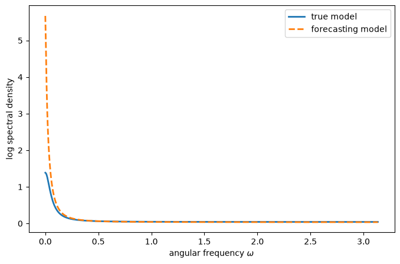
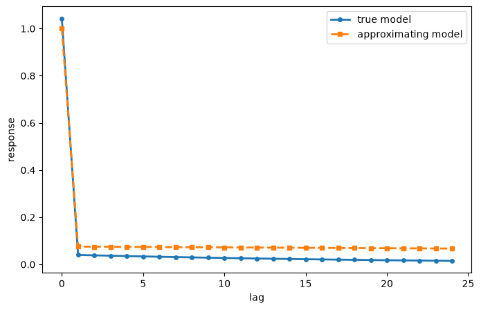
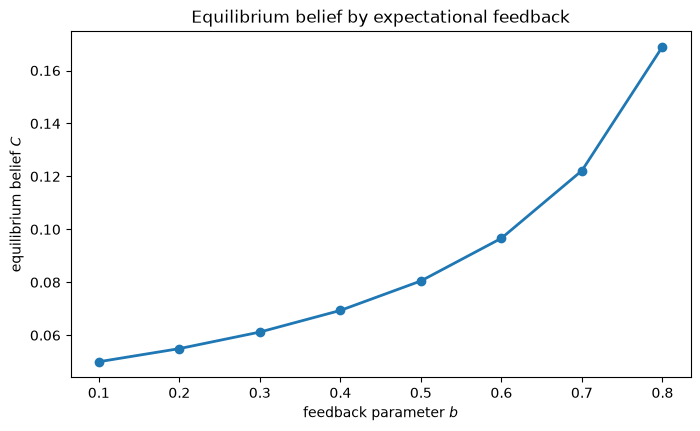
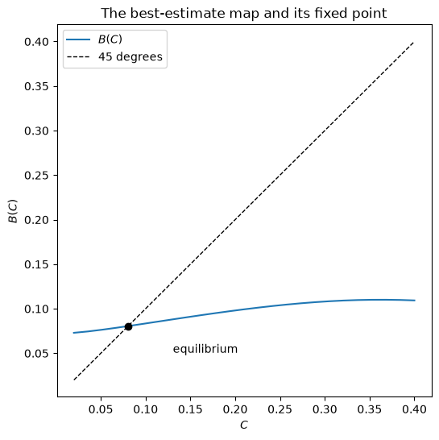

100. 最优错误设定信念#
100.1. 概述#
本讲座继续研究菲利普斯曲线的权衡关系。
内容遵循 [Sargent, 1999] 的第 6 章。
在 适应性预期与费尔普斯问题 中，公众使用一个固定的适应性规则来预测通货膨胀，其中的参数 \(\lambda\) 是我们直接选定的。
从某种意义上说，这种做法并不令人满意，而 美国通货膨胀的兴衰 中的印证故事是无法容忍这一点的：描述预期的自由参数正是理性预期本应消除的东西。
在这里，我们朝着”赢得”这个参数迈出了第一步——让代理人自己选择该参数，以拟合由他们自身信念所产生的数据。
我们描述了贯穿本系列讲座的三个概念性问题：
如何构建这样一种均衡——其中代理人共享一个共同的错误设定的最小二乘预测模型，
预期如何能够在均衡中贡献出独立的动态，以及
经典的适应性预期方案如何利用二阶矩来近似一阶矩。
为了揭示这些问题，我们暂时搁置菲利普斯曲线，转而使用 [Bray, 1982] 关于单一商品价格的简单模型——这是研究有限理性的一个常用工具。
我们对布雷的模型加以修改，以说明一种以新的方式融合了理性预期与适应性预期两方面特征的均衡概念，并将在 自我确认均衡 中把它应用于菲利普斯曲线。
本讲座的重点是具有最优但错误设定预测的市场均衡。
最优意味着预测方案的自由参数是通过（非线性）最小二乘法选择的。
错误设定意味着预测模型在函数形式上是错误的。
一个显著的特征是：真实模型取决于代理人的模型是如何被错误设定的——代理人的信念会影响其行为，而这种行为又塑造了他们随后用于拟合的数据。
我们将在频域中展开分析，因此让我们先导入所需的库：
import matplotlib.pyplot as plt
import numpy as np
from scipy.optimize import minimize_scalar
100.2. 布雷实验室中的一个实验#
遵循 [Bray, 1982]，假设
其中 \(u_t\) 是独立同分布的，均值为零，方差为 \(\sigma_u^2\)，\(a > 0\)，\(b \in (0, 1)\)，\(p_t\) 是市场价格，\(p_{t+1}^e\) 是市场对下一期价格的预期。
理性预期均衡满足 \(p_{t+1}^e = \frac{a}{1-b}\) 且 \(p_t = \frac{a}{1-b} + u_t\)。
布雷假设 \(p_{t+1}^e\) 是过去价格的经验平均值，并证明了当 \(0 < b < 1\) 时，这种递减增益方案几乎必然收敛到理性预期值 \(\frac{a}{1-b}\)。
在过渡期间，状态变量 \(p_t^e\) 贡献了动态性，使价格呈现序列相关性，但这些动态是暂时性的：在理性预期均衡处，\(p_t\) 是一个常数加上一个序列不相关的冲击。
100.2.1. 常增益适应性预期#
为了让预期能够赋予持续性的序列相关性，我们偏离布雷的设定，假设市场具有常增益适应性预期：
布雷的方案用 \(\frac{1}{t}\) 代替 \(C\)，从而使 \(p_{t+1}^e\) 成为一个样本平均值。
而固定 \(C\) 则会对过去的观测值进行贴现，这会阻止收敛到理性预期，也会阻止 \(p_{t+1}^e\) 收敛到某个常数。
写成分布滞后形式：
其中 \(L\) 是滞后算子。
如果价格遵循如下的整合移动平均过程，那么方程 (100.2) 就是线性最小二乘预测：
因此市场将价格感知为由纯粹的永久性成分和暂时性成分构成。
100.2.2. 实际运动规律#
将信念 (100.3) 代入 (100.1)，可以看出：当市场以这种方式进行预测时，其行动使价格的实际运动规律变为
其中 \(\nu = \frac{a}{1-b}\)，\(f(L)\) 的定义与之匹配。
该价格的均值为 \(\nu\)，谱密度为
注意 \(F\) 通过 \(f\) 依赖于 \(C\)。
让我们对真实过程进行编码。
class BrayModel:
"""
Bray's price model with constant-gain adaptive expectations.
The perceived law of motion is an IMA(1,1) with unit root; to keep its
spectral density well defined we approximate the unit root by a root ρ
slightly below one, following Sargent (1999).
"""
def __init__(self, a=1.0, b=0.5, σ_u=1.0, ρ=0.995, N=1024):
self.a, self.b, self.σ_u, self.ρ, self.N = a, b, σ_u, ρ, N
self.ν = a / (1 - b)
ω = 2 * np.pi * np.arange(N) / N
self.ω = ω
self.z = np.exp(1j * ω)
def true_spectrum(self, C):
"Spectral density F(ω) of the actual price process, given belief C."
b, z = self.b, self.z
φ = (1 - C) / (1 - b * C)
scale = 1 / (1 - b * C)
f = scale * (1 - (1 - C) * z) / (1 - φ * z)
return np.abs(f)**2 * self.σ_u**2
def approx_spectrum(self, c, σ_ε2=1.0):
"Spectral density G(ω) of the agent's approximating IMA model."
g = (1 - (1 - c) * self.z) / (1 - self.ρ * self.z)
return np.abs(g)**2 * σ_ε2
100.3. 最优错误设定#
关于实际运动规律 (100.5) 的两个事实促使我们对 \(C\) 施加均衡约束：
即使将预测限定为 (100.2) 的形式，最佳的这类规则也应使 \(C\) 求解一个预测误差最小化问题，因此 \(C\) 应当是一个结果，而非自由参数。
理性预期均衡本可以修正这两个特征。
我们遵循 [Bray, 1982] 的做法，弱化均衡概念：保留特征 1 不变（代理人保留错误的函数形式），同时修正特征 2（他们在该形式下选择最优参数）。
设想将单个个体置于一个市场中，市场中所有其他人（“代表性代理人”）都使用 \(C\)，因此价格遵循 (100.5)。
该个体选择 \(c\) 以拟合以下形式的最佳模型：
方法是最小化单步预测误差方差。
由于 \(g(L)\) 具有单位根，其直流增益是无穷大的；这正是感知模型如何利用单位根来拟合常数均值 \(\nu\) 的方式。
在数值计算中，我们用一个略小于一的根 \(\rho\) 来替代单位根。
定义 100.1 (最优估计映射)
给定 \(C\) 及其导致的价格过程 (100.5)，个体的最优预测参数 \(c = B(C)\) 是 (100.6) 中 \(c\) 的非线性最小二乘估计量，其中数据由 (100.5) 生成。
按照汉森和萨金特 [Hansen and Sargent, 1993] 的频域方法，最佳近似 \((c, \sigma_\epsilon^2)\) 使以下式子最小化：
其中 \(\omega_j = \frac{2\pi j}{N}\)，项 \(\frac{\nu^2}{G(0)}\) 使得近似模型利用其接近单位根的特性来拟合均值。
将 \(\sigma_\epsilon^2\) 集中消去后，剩下一个关于 \(c\) 的一维最小化问题。
定义 100.2 (预测错误设定下的均衡)
预测错误设定下的均衡是一个不动点 \(C = B(C)\)。
在这样一个不动点处，代表性代理人是名副其实的：“代表性”——单个个体的最优参数与所有人都使用的参数相等。
def best_estimate(model, C):
"The best-estimate map c = B(C)."
F = model.true_spectrum(C)
z, ν, N = model.z, model.ν, model.N
def neg_profile(c):
H = np.abs((1 - (1 - c) * z) / (1 - model.ρ * z))**2 # |g|^2
σ_ε2 = np.mean(F / H) + ν**2 / H[0] # concentrated
return np.log(σ_ε2) + np.mean(np.log(H)) # profiled criterion
res = minimize_scalar(neg_profile, bounds=(1e-4, 0.99), method='bounded')
return res.x
def solve_equilibrium(model, C0=0.3, tol=1e-10, maxit=500):
"Iterate the best-estimate map to a fixed point."
C = C0
for _ in range(maxit):
C_new = best_estimate(model, C)
if abs(C_new - C) < tol:
break
C = C_new
return C_new
bray = BrayModel(a=1.0, b=0.5, σ_u=1.0)
C_star = solve_equilibrium(bray)
print(f"equilibrium belief C = {C_star:.4f}")
equilibrium belief C = 0.0805
对于这些参数，均衡信念约为 \(C \approx 0.08\)，这再现了 [Sargent, 1999] 第 6 章中报告的数值。
我们还来报告一下代理人使用其错误设定模型所导致的实际单步预测误差标准差。
def fitted_sigma2(model, C, c):
"Concentrated innovation variance σ_ε^2 of the approximating model."
F = model.true_spectrum(C)
H = np.abs((1 - (1 - c) * model.z) / (1 - model.ρ * model.z))**2
return np.mean(F / H) + model.ν**2 / H[0]
c_star = best_estimate(bray, C_star)
σ_bar = np.sqrt(fitted_sigma2(bray, C_star, c_star))
print(f"actual one-step forecast error std σ̄_ε = {σ_bar:.4f}")
actual one-step forecast error std σ̄_ε = 1.0579
100.4. 比较真实模型与预测模型#
对于均衡 \(C\)，我们绘制真实模型与近似模型的均衡谱密度。
F = bray.true_spectrum(C_star)
σ_ε2 = fitted_sigma2(bray, C_star, c_star)
G = bray.approx_spectrum(c_star, σ_ε2)
half = bray.N // 2
fig, ax = plt.subplots(figsize=(8, 5))
ax.plot(bray.ω[:half], np.log(F[:half]), 'C0', label='true model', lw=2)
ax.plot(bray.ω[:half], np.log(G[:half]), 'C1--', label='forecasting model', lw=2)
ax.set_xlabel(r'angular frequency $\omega$')
ax.set_ylabel('log spectral density')
ax.legend()
plt.show()

图 100.1 真实价格过程与代理人近似模型的谱密度#
在最小化 (100.7) 的过程中，近似模型利用其接近单位根的特性来拟合均值。
低频处两个谱密度之间的巨大差距，反映了近似模型是如何用二阶矩的特征（零频率处谱密度的一个尖峰）来拟合一阶矩（均值 \(\nu\)）的。
真实谱密度随频率急剧下降——这正是格兰杰所说的”典型谱形状”（[Granger, 1966]）——这揭示了价格中存在相当大的正序列相关性，因为代理人认为价格受永久性冲击影响的信念，使得冲击具有持续性。
100.4.1. 脉冲响应#
我们通过向每个移动平均表示输入一个单位冲击，来比较两个模型的脉冲响应函数。
def impulse_response(num_roots, den_roots, T=25):
"IRF of (1 - num L)/(1 - den L): coefficients of the ratio of lag polys."
h = np.empty(T)
h[0] = 1.0
for k in range(1, T):
h[k] = den_roots * h[k - 1]
h[1:] -= num_roots * h[:-1] # apply the numerator (1 - num L)
return h
φ = (1 - C_star) / (1 - bray.b * C_star)
scale = 1 / (1 - bray.b * C_star)
irf_true = scale * impulse_response(1 - C_star, φ) # f(L)
irf_approx = impulse_response(1 - c_star, bray.ρ) # g(L)
fig, ax = plt.subplots(figsize=(8, 5))
ax.plot(irf_true, 'C0o-', ms=4, label='true model', lw=2)
ax.plot(irf_approx, 'C1s--', ms=4, label='approximating model', lw=2)
ax.set_xlabel('lag')
ax.set_ylabel('response')
ax.legend()
plt.show()

图 100.2 真实模型与近似模型的脉冲响应#
真实模型的脉冲响应确认了价格中的序列相关性。
近似模型往往会低估冲击的短期影响，而高估其长期影响：其接近单位根的特性导致了一种不会消退的响应。
100.5. 结论#
这个模型中的代理人具有有限理性：理性描述的是他们使用最小二乘法这一事实，而有限描述的则是他们的模型错误设定。
在理性预期下，只有一个模型在起作用。
而在有限理性下，则必须至少有两个模型：有限理性代理人所使用的模型，以及真实的模型。
这两者相互影响——有限理性代理人利用自己的模型去近似真实模型，而真实模型又反映了代理人的决策——并且两者都不同于理性预期模型。
适应性预期模型利用单位根来模仿常数这一独特方式，预示了在 自我确认均衡 中发展的菲利普斯曲线模型的一个版本，该版本有助于为计量经济学政策评估正名。
这个技巧——用单位根来近似常数——同样是 适应性学习与逃逸动态 和 逃离纳什通胀 中逃逸动态的引擎，其中一个正在学习的政府所估计的菲利普斯曲线会逐渐趋向归纳假设，并在相信该假设后，将通货膨胀率下调至拉姆齐水平。
100.6. 练习#
练习 100.1
均衡信念 \(C\) 取决于 (100.1) 中的反馈参数 \(b\)。
在保持 \(a = 1\) 和 \(\sigma_u = 1\) 固定的情况下，计算并绘制均衡 \(C\) 作为 \(b\) 的函数，其中 \(b\) 取自网格 \(b \in \{0.1, 0.2, \ldots, 0.8\}\)。
更强的预期反馈（更大的 \(b\)）如何影响对过去数据进行贴现的均衡程度？
解答 练习 100.1
b_grid = np.arange(0.1, 0.85, 0.1)
C_of_b = [solve_equilibrium(BrayModel(a=1.0, b=b, σ_u=1.0)) for b in b_grid]
fig, ax = plt.subplots(figsize=(8, 4.5))
ax.plot(b_grid, C_of_b, 'o-', lw=2)
ax.set_xlabel('feedback parameter $b$')
ax.set_ylabel('equilibrium belief $C$')
ax.set_title('Equilibrium belief by expectational feedback')
plt.show()

更强的反馈会提高均衡增益 \(C\)：代理人会对近期观测值赋予更大的权重，因此他们所产生的价格过程比原本会呈现的持续性更弱。
练习 100.2
通过将最优估计映射 \(c = B(C)\) 与 45 度线一起绘图，并标出不动点，来验证该均衡确实是一个真正的不动点。
解答 练习 100.2
C_grid = np.linspace(0.02, 0.4, 25)
B_vals = [best_estimate(bray, C) for C in C_grid]
fig, ax = plt.subplots(figsize=(6, 6))
ax.plot(C_grid, B_vals, 'C0', label='$B(C)$')
ax.plot(C_grid, C_grid, 'k--', lw=1, label='45 degrees')
ax.plot(C_star, C_star, 'ko')
ax.annotate('equilibrium', (C_star, C_star),
(C_star + 0.05, C_star - 0.03))
ax.set_xlabel('$C$')
ax.set_ylabel('$B(C)$')
ax.set_title('The best-estimate map and its fixed point')
ax.legend()
plt.show()

最优估计映射在均衡信念处与 45 度线相交，证实了 \(C = B(C)\)。